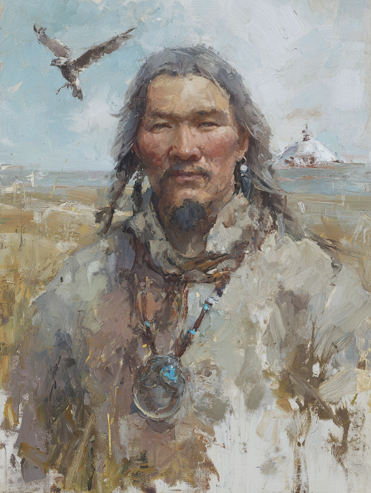

Temir of the Skyborn
Shaman of Kök-Tengri · The Iron of the Blue Sky

Mongolian / Turkic · Aged Thirty-Eight
On the Subject
Temir was born to a family the settled lords called criminals — raiders, horse-thieves, or simply nomads who had stopped paying the wrong khanate its dues. The line is thin out there and was thinner for him. He grew up wretched, the fourth of seven children. They were six siblings to him; he is the only one whose story the chronicle has so far followed.
The shamans of a neighboring clan recognized something in him — the qamata came and took him at the age of eleven, and he grew up under their drum and incense. They taught him to walk into the Spirit Walk and back, to read smoke, to call ancestors by name, and to fear and respect Erlik's hells beneath the world. He came up into his shaman's authority quietly. His birth clan, by then, were either dead or vanished. He has not asked which.
He bridges the living and the spirit world for nomadic kin along the Silk Road's northern reaches, offering visions and ancestral guidance. He carries a small ritual drum, a talisman of the Skyborn carved with the symbol of the Eternal Blue, and the bones of a knucklebones set he won years ago in a long winter's gambling. He has a secret. He has not told it to anyone yet.
Faculties & Saving Throws
Rolled block #5: 7, 10, 11, 13, 14, 16 · Human +1 to all six · Focused Caster: +1 Wis
Bearing on the Route
Skills
| Skill | Bonus | Source |
|---|---|---|
| Medicine | +6 | Wanderer |
| Survival | +6 | Wanderer |
| Animal Handling | +6 | Druid |
| Nature | +3 | Druid |
| Insight | +6 | Oracle (Cold Reading) |
Class Features
Wisdom is his spellcasting ability. Spell save DC 14 · Spell attack +6. Prepares spells equal to Wis mod + druid level = 7 spells per day, changeable on a long rest. Plus subclass spells (always prepared, no count). Spellcasting focus: a druidic talisman — yew sprig wrapped in horsehair.
He knows the secret language of druids. He may hide messages in plain sight in Druidic as a passive skill.
As an action, magically assume the shape of a beast he has seen before. At L3 limits: max CR 1/4, no flying speed, no swimming speed. Duration 1 hour (half druid level in hours). Revert as bonus action or when reduced to 0 HP.
Steppe-appropriate picks at L3: wolf (CR 1/4), mastiff.
- Prayer of Healing L3
- Lesser Restoration L3
These are always prepared and do not count against his 7-spell preparation limit.
As an action, expend a Wild Shape use to enter the Spirit Walk instead of a beast form. He takes an elemental-spirit shape; for 10 minutes (dismissable as an action) he can see and speak with spirits and detect undead within 120 ft. (not blocked by total cover).
Near a bonfire, he may ask the blue sky or the black hell a yes/no question about future or past. The blue sky demands a spell slot; the black hell demands 5 piercing self-damage (or another's blood). Answers depend on the entity's knowledge.
Alternatively, reach out for healing or harming powers:
- Blue sky: bonus action touch up to 3 creatures, heal 1d6 + 4 each (for 8 hours).
- Black hell: action mark up to 3 creatures; Wis save DC 14 or take 2d6 psychic (half on save; for 1 hour).
He may also call a deceased spirit by real name and ask one question. Wis save DC 13; on success, three questions. Spirits are not compelled to truth and are typically cryptic.
When a creature within 60 ft. he can see takes damage, he may use his reaction to roll 1d6 and reduce the damage by that amount. Excess reduction becomes temporary HP for the target.
When a creature dies within 60 ft. in the past hour, he may enter a 1-minute trance to guide its spirit. Wis save DC 12: fail and he takes 2d6 psychic; succeed and the creature cannot be raised as undead and he gains 2d4 temp HP.
Alternatively, when a creature within 60 ft. rolls a death save, he may use his reaction to grant advantage on the roll.
Spells
Spell save DC 14 · Spell attack +6 · Slots: 1st × 4, 2nd × 2
- Druidcraft
- Guidance
- Cure Wounds 1st
- Entangle 1st
- Goodberry 1st
- Healing Word 1st
- Moonbeam 2nd
- Hold Person 2nd
- Pass Without Trace 2nd
Moonbeam is reskinned narratively as Eternal Sky's Light — a beam of starlight from above.
Feat
Years of meditation in the wind, the snow, and the bonfire ring trained him to hold a vision through pain.
- +1 Wisdom (his spellcasting ability) → final Wis 18.
- When he loses concentration due to taking damage and fails the Constitution save, his spell remains in effect until the end of his next turn. Once per short or long rest.
Background — Wanderer
Temir knows the surrounding lands, towns, cities, and their cultures, religions, myths, and folktales. Most foreign places welcome him as a traveler and hermit rather than an outsider.
Your Journey
Lifepath · rolled and chosen entries from the Silk Road book
Time at the gaming tables.
During a long winter at a caravanserai he played a lot of knucklebones and other gambling games. Grants gaming-set proficiency: Knucklebones.
Fell in love.
A partner, somewhere — a clan-mate, a fellow shaman, a stranger met at a sacred mountain. Open in play. The chronicle does not name them and Temir does not speak of them often.
Found a pouch.
Once found 5 gp and 10 sp in an abandoned camp or on a frozen body. Spent long ago; the memory remains.
He has a secret. A grim one.
Told to the GM only. It is the kind of secret that has not yet found the right ear, and Temir is not yet sure whom it will eventually find.
Profession
Silk Road PEX system · Apprentice rank
Cold Reading (free): Proficiency in Insight (reflected in his skills table). He may use Insight for fortune-telling checks; the GM may permit Intelligence or Wisdom depending on his method. Basic Astrology (free): by learning a person's birthday and birth hour, he can determine their star-signs via an Int (Nature) check (DC 10 with both, DC 15 without). The GM provides personality-trait insights linked to the signs.
Yakub of the Mystic Order of Samarkand is also an apprentice Oracle. The two share a profession but practice different traditions — Yakub reads chaos through arcane formulas; Temir reads spirits through drum, fire, and the Spirit Walk. Their methods diverge sharply even where the profession's mechanics overlap.
Equipment
- Quarterstaff — a length of ash bound with horsehair; his shaman's walking-staff. 1d6 bludgeoning, versatile 1d8; +1 to hit / 1d6−1 (or 1d8−1 two-handed).
- Sling — steppe-folk weapon, easy to make on the road. 1d4 bludgeoning, ammunition 30/120; +4 to hit / 1d4+2.
- Hanchar — Silk Road dagger; 1d4 slashing, finesse, light, handy; +4 to hit / 1d4+2.
- Hide Armour — treated hides with bone toggles; AC 12 + Dex (cap +2); non-metal — druid-legal. Final AC 14.
- Talisman of the Skyborn — a flat disc of bone carved with the spiral of the Eternal Blue, hung from a horsehair cord.
- Ritual drum — a flat hand-drum, painted with the constellations of the steppe sky.
- Old prayer book of his teachers — in Turkish — half memorized, half illegible.
- Traveler's clothes — felt boots, layered wool, sheepskin coat.
- Herbalism kit — Wanderer grant.
- Knucklebones set — five sheep-bones, polished smooth from use.
- Igil — a horsehead fiddle, wrapped in oiled cloth.
- Belt pouch — empty — Wretched lifestyle.
- A small tent — at the camp of whatever clan he is currently teaching. Stays in one place for as long as the clan does — which is to say, never very long.
Personality
"I do not interrupt the spirits. I do not interrupt people, either. They will speak when ready."
"The Sky moves above, the Earth holds below, and we walk between. Disturb neither without need."
"The qamata who took me in had no children of his own. I am his memory in the world. While I breathe his teaching does not die."
"I carry a secret that should not be carried alone. I do not yet know whom to tell."
Connections
- Aymara Flameshaper — He knows of her clan; the qamata who raised him traded with her clan's elders in the seasonal markets every other autumn for a stretch in his thirties. He has not met Aymara herself, but he has heard her clan's name spoken in the same breath as Djinnbound — the steppe knows that some clans practice the binding ritual, and the qamata spoke of Aymara's clan as one of the older lines that still does. If they meet, Temir will recognize the weight on her shoulder before she has explained anything. He will not ask. He will wait, and watch, and see if the djinn has anything to say to him on its own.
- Yakub ibn Mansur al-Samarqandi — They have not met, but the Mystic Order of Samarkand has, on three occasions Temir knows of, sent a brother of the order to consult with steppe shamans on questions the Order's library could not answer. Temir attended one of these consultations as a translator for his master, four years ago. The brother who came was not Yakub. The order Yakub belongs to and the shaman-tradition Temir was trained in have a quiet professional respect for each other — neither claims to know what the other knows; both acknowledge the seam where their cosmologies meet. If Yakub and Temir end up in the same room, they will recognize each other inside ten words.
He speaks for spirits and ancestors with a stillness most men cannot manage even for themselves; on the steppe routes where ghosts outnumber witnesses, his counsel is worth more than an armed escort.